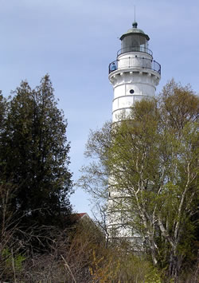

Here is the image of a beautiful light house in an island. This light house should be shown a little bit inclined according to the CSS shown here. Here is the link to City College main page. When the mouse goes over this link, you should see the transition working.
Try change the rotation number to see what happens to the image and what happens to the text that is flowing in the left side of the picture.
This paragraph will not be showing in the left side of the picture. It will be showing under the picture due to the class that is being used for this paragraph.